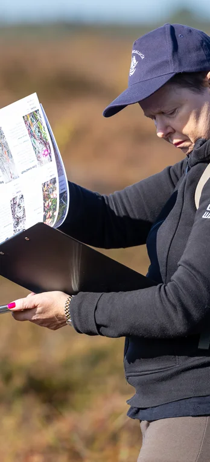

First Saturdays
First Saturdays is Cornafulla Micro Reserve's monthly programme of walks, talks and workshops exploring the natural, cultural and ecological heritage of Cornafulla Bog and the Shannon Callows. Held on the first Saturday of each month at 11am, the gatherings bring together local residents, landowners, volunteers and specialists to share knowledge, explore the landscape and encourage participation in its conservation. The programme began in September 2026, with sessions covering birdwatching, plant identification and archaeology. Planning is already underway for 2027, with contributions confirmed from 12th Field Architects and Woodrow's peatland ecologists, including a practical workshop on assessing bog vegetation. Everyone is welcome, and no previous specialist knowledge is required.